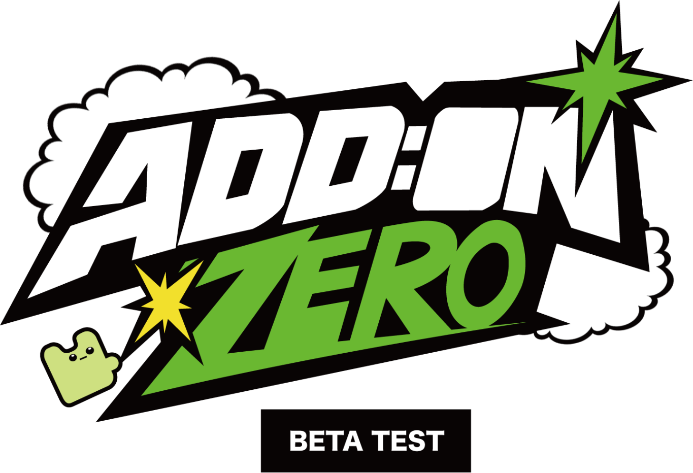

← PROJECTSCURRENT PROJECT / BETA TEST
ADD:ON ZERO
あでぃよんが開発・運営するGTA / FiveMプロジェクト。QBCoreをベースに、独自スクリプトやUIの開発・改修を行っています。
01ABOUT
概要:
街での仕事や犯罪、住宅の管理、釣りや採集など、プレイヤーが日常的に触れる機能を個別に開発しています。既存リソースを組み合わせるだけでなく、企画に必要な機能は専用のスクリプトとして追加しています。
UIの使いやすさや各コンテンツの進行、バランスも含めて調整しています。
TRAILER
プロジェクトPV:
ADD:ON ZERO PV
02CONTENTS
開発コンテンツ:
JOBS & BUSINESS
職業・店舗
街の治安や医療を支える公共職、自分の店を持つ飲食店、人材派遣会社など、仕事内容の違う職業を選べます。
- 公共の仕事
- 警察は治安維持、救急隊は治療と蘇生、メカニックは車両の修理やカスタムを担当します。
- 飲食店の営業
- 商品を登録して販売し、店舗ごとのスタンプカードを発行できます。
- 人材派遣
- 輸送や警備などの依頼を受注し、現場に合わせた仕事を請け負います。
CRIME
犯罪コンテンツ
銀行、輸送、コンテナなど、企画ごとに条件や進行が異なる犯罪コンテンツを用意しています。
- 受注
- 受注画面から案件ごとの人数条件や受付状況を確認できます。
- 抽選と待機時間
- 案件によって抽選やクールダウンがあり、受けられるタイミングが変わります。
- 施設の警備
- 人材派遣が施設の警備を受注でき、警備の有無で犯罪時の状況が変化します。
HOUSING
住宅・家具
住宅を購入して家具を置いたり、仲間と住まいや作業場所を共有したりできます。
- 住宅の所有
- 共同所有や合鍵を使って、仲間と住宅へのアクセスを共有できます。
- 家具の配置
- 室内で使う家具を配置・管理して、自分の生活に合わせて部屋を整えられます。
- 作業設備
- 作業台や精錬設備を使い、素材を加工して制作に活用できます。
SKILLS
スキルツリー
街での活動を重ねながら、釣り、採集、制作など、自分の遊び方に合うスキルを伸ばせます。
- レベル50までの成長
- 体力や脚力、釣り、採集などの成長要素を用意しています。
- スキルポイント
- 獲得したポイントを振り分け、伸ばしたい分野のスキルやレシピを開放します。
- 制作レシピ
- 一部のレシピは、スキルに加えてブループリントの習得が必要です。
ACTIVITIES
釣り・採集・レース
仕事の合間に釣りやレースを楽しんだり、採集で手に入れた素材を制作に回したりできます。
- 釣り
- 釣りを続けてスキルを伸ばし、さらに上位の釣竿を目指せます。
- 採集
- 伐採や採掘で素材を集め、加工や精錬を経て住宅設備などの制作に使えます。
- レース
- 街のアクティビティとして車両を使ったレースに参加できます。
INTERFACE
UI・タブレット
職業の仕事を受ける操作から、日常の請求や地図設定まで、用途に合わせた画面を用意しています。
- 職業タブレット
- 職業ごとの依頼確認や受注をタブレットから行えます。
- 請求・送金
- 請求と送金を切り替えながら、店舗やプレイヤー同士の取引を進められます。
- HUD・地図
- 目的地アイコンやGPSルートの表示、マーカーの色や形を設定できます。
03JOBS
職業一覧:
01PUBLIC SERVICE
公共職
犯罪に加わらず、街の治安や医療、車両を支える職業。
警察犯罪の取り締まり、街の治安維持
警察メカ警察車両の修理を担当する警察内の専門職
救急隊負傷者の治療と蘇生
メカニック車両の修理・カスタム
02BUSINESS
店舗
営業を通してプレイヤーの生活を支える職業。
バー飲料を中心とした商品販売
レストラン料理や食料品の販売
花屋ストレス回復アイテムの販売
新規店舗プレイヤーによる飲食店の開店
03UNDERGROUND
犯罪関連
犯罪やその周辺の活動に関わる職業。
ギャング組織として犯罪活動に参加
ギャングメカ犯罪中の車両修理を担当
個人医犯罪者の回収・治療・蘇生
非正規メカ現場への出張修理に対応
04THIRD FORCE
中立職
依頼先に応じて立場が変わる職業。
人材派遣会社警察の助っ人、犯罪者の傭兵、店舗作業、輸送ミッションなどを受注
LIVE STREAM
LIVE STREAM配信を見る:
現在配信中のメンバーはこちらから。